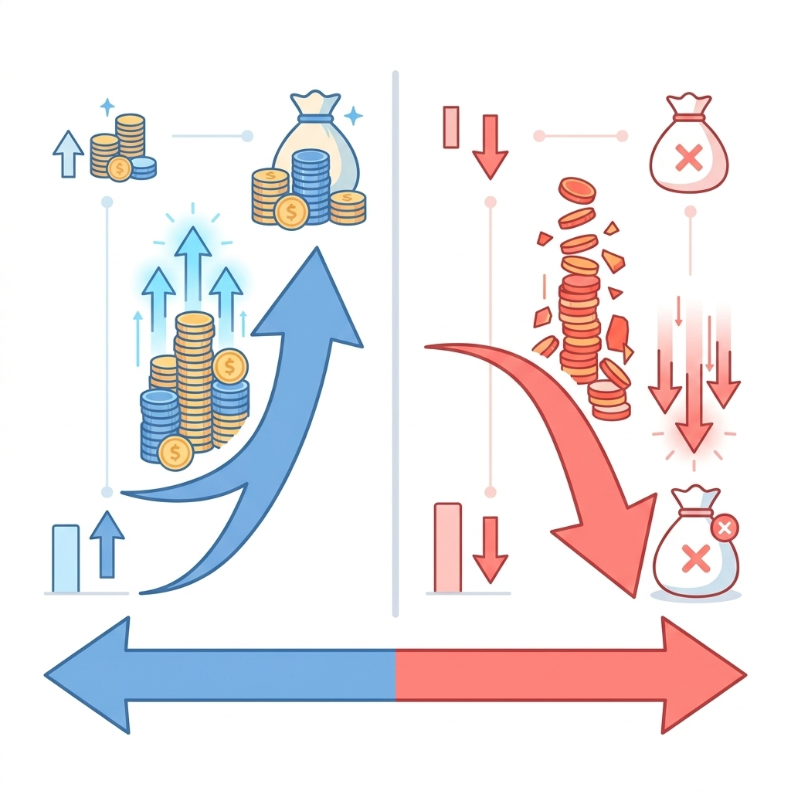

這一篇要談的，是整個「投資理財修煉」進階篇裡風險最高的工具——槓桿工具，主要包括權證和期貨。
我先說清楚這篇的立場：我不是要你去玩這些工具，而是要讓你搞懂它們是什麼、風險在哪、什麼人才適合碰。很多人因為不了解就貿然進場，虧大錢；也有人因為不了解，聽到「槓桿」兩個字就完全迴避，錯過了某些合理的應用場景。兩種極端都不好，所以先認識它。
什麼是槓桿
槓桿的概念很簡單：用小錢控制大部位。就像你用一根棍子撬動一塊大石頭——你施的力很小，但移動的重量很大。在投資上，槓桿讓你用相對少的資金，參與更大金額的市場波動。
聽起來很好？問題在於：槓桿是雙向的。它放大獲利，也放大虧損，而且常常是「等比放大」。

權證是什麼
權證（Warrant）是一種衍生性金融商品，它賦予你在特定時間內、以特定價格買進（認購）或賣出（認售）某檔股票的權利。
幾個關鍵特性：
- 有時間限制：每張權證都有到期日，到期就作廢。不像股票可以一直持有，權證一到期沒有獲利就歸零。
- 時間價值會流失：就算標的股票沒動，時間一天天過去，權證的價值會不斷縮水（稱為「時間價值損耗」）。
- 槓桿倍數：通常 5 倍到 10 倍以上，標的股漲 5%，你的權證可能漲 30~50%；但反過來也一樣。
適合誰：對特定股票有短期看法、能接受「可能全賠」風險的人。這不是長期持有的工具。
小提醒：因為時間價值的問題，就算你買對方向，但「買晚了」或「等太久」，照樣可能賠錢。這是很多新手被燒到的地方。
期貨是什麼
期貨（Futures）是一種約定在未來某個時間點，以今天說好的價格，買賣某個標的的合約。標的可以是股票指數、外匯、商品（黃金、石油）等。
幾個關鍵特性：
- 保證金制度：不用付全額，只要繳一小部分「保證金」就能控制大部位。槓桿可能高達 10~20 倍甚至更高。
- 雙向交易：可以做多（看漲），也可以做空（看跌）。
- 每日結算：期貨每天都會結算損益，帳戶若因虧損低於維持保證金，就會收到「追繳保證金通知」（Margin Call），必須立刻補錢，否則被強制平倉。
- 有到期日：跟權證一樣，到期必須結清或轉倉。
最大的風險：虧損可以超過你投入的本金。因為槓桿太高，市場稍微逆向就可能把保證金打光，還欠錢。這在股票或 ETF 上幾乎不可能發生。
適合誰：有豐富投資經驗、資金充足、能嚴格執行停損的人。期貨本質上是「零和遊戲」，你的獲利就是對手的虧損，市場上的對手多半是專業法人。
槓桿工具的共同警示
無論是權證還是期貨，它們有幾個共同的特性要銘記在心：
- 時間是你的敵人（不是朋友）：不像長期持有股票或 ETF，槓桿工具有到期日，持有越久，時間帶來的損耗越大。
- 虧損速度遠快於獲利速度：市場一個反向波動，你的損失可能在幾分鐘內就超過預期。
- 容易被情緒左右：槓桿放大的不只是金額，還有你的心理壓力。大多數人在高壓下會做出錯誤決策。
- 交易成本高：頻繁進出加上各種費用，長期下來是巨大負擔。
這類工具不是不能碰，但絕對不是起步的地方。如果你現在才剛認識投資，把前幾篇談的股票、ETF、債券學透，才是更划算的時間投資。
這篇的結論
- 權證：有槓桿、有時間限制、時間價值流失，適合短期看法明確且能接受全賠的人。
- 期貨：槓桿更高、有追繳風險、虧損可能超過本金，適合有豐富經驗的投資人。
- 兩者都不適合新手作為主要投資工具。
認識它們的意義，在於你日後看到相關資訊時，知道它的風險在哪、不會輕易被「獲利無限」的說法吸引進去。這就夠了。
下一篇，我們進入這個系列的核心分析篇——基本面分析：怎麼看一家公司值不值得投資。
系列導覽
- 📚 回到 投資理財修煉 全系列目錄
- ⬅️ 上一篇：債券入門：為什麼投資組合需要它
- ➡️ 下一篇：基本面分析：怎麼看一家公司值不值得投資（即將推出）
本文為個人學習記錄與知識整理，非投資建議。投資有風險，請依自身情況獨立判斷 🐾